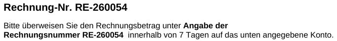

Fallstudie · Zahlungsabgleich
Vom Zahlungseingang zur bestätigten Rechnung
„Ist die Zahlung des Kunden schon eingegangen?" Diese Frage bedeutete bisher: Bankkonto prüfen, die passende Rechnung suchen, die Zahlung von Hand in der Buchhaltung eintragen und dem Kunden eine Bestätigung schicken. Jeder Vorgang dauerte nur Minuten — bei vielen Rechnungen wurde daraus trotzdem ein erheblicher Zeitaufwand. Ich habe daraus eine Pipeline gebaut, die Zahlungseingänge vom Qonto-Konto abruft, Rechnungsnummern im Verwendungszweck erkennt, jede Zahlung gegen den HERO-Rechnungsbestand prüft, sie verbucht und die Bestätigung verschickt. Kein Schritt läuft dabei blind: Unklare Fälle stoppen und landen in einer manuellen Prüfliste.
- Python
- pandas
- Qonto-API
- GraphQL
- Selenium
- SMTP/IMAP
- Streamlit
Diese Fallstudie zeigt, wie aus einer wiederkehrenden Backoffice-Frage ein kontrollierter Ablauf wurde: vom ersten E-Mail-Parser über die Bank-API und die Abgleichlogik bis zur Browser-Automatisierung, die Zahlungen in HERO einträgt — mit klaren Stopppunkten überall dort, wo ein Fehler teurer wäre als Handarbeit.
1. Der ganze Ablauf sollte automatisch laufen — nicht nur ein Teil
Das Ziel war nicht nur, Kontobewegungen einzulesen. Der gesamte Weg einer Zahlung sollte automatisiert werden:
- Aktuelle Rechnungen aus HERO laden
- Neue Zahlungseingänge aus Qonto abrufen
- Rechnungsnummern aus dem Verwendungszweck erkennen
- Zahlungen mit Rechnungen und früheren Zahlungen abgleichen
- Korrekte Zahlungen in HERO verbuchen
- Dem Kunden eine passende Zahlungsbestätigung senden
- Alle bearbeiteten Vorgänge archivieren
Dabei durfte kein Schritt blind ausgeführt werden. Eine falsch zugeordnete oder doppelt verbuchte Zahlung wäre problematischer gewesen als die bisherige manuelle Arbeit.
2. Der erste Ansatz: Zahlungsdaten aus E-Mails lesen
Unser früheres Geschäftskonto lief über Finom. Für meinen Anwendungsfall stand dort keine geeignete API zur Verfügung. Die KI schlug deshalb vor, die Benachrichtigungsmails über neue Zahlungseingänge auszulesen. Diese E-Mails hatten einen weitgehend festen Aufbau und ließen sich mit einem Parser verarbeiten — einem kleinen Programm, das Text nach festen Feldern absucht:
Betrag:
Absender:
Verwendungszweck:
Buchungsdatum:Das funktionierte grundsätzlich — war aber keine gute dauerhafte Lösung. Eine Benachrichtigungsmail enthält nur die Informationen, die der Anbieter dort einfügt, und schon eine kleine Änderung am Mailformat kann den Parser unbemerkt beschädigen. Die Automatisierung hing damit am Aufbau einer E-Mail statt am Bankkonto selbst.
3. Der Wechsel auf eine Bank mit API
Später wechselten wir zu Qonto. Dort lassen sich die Transaktionen direkt über eine API abrufen. Das Programm baut eine Qonto-Session mit API-Zugangsdaten auf, ermittelt das zu verwendende Bankkonto und lädt die Transaktionen seitenweise. Der tägliche Lauf betrachtet nur die neuesten Einträge und verarbeitet daraus ausschließlich Gutschriften:
side == "credit"Für jede Gutschrift werden die Angaben übernommen, die später für die Zuordnung gebraucht werden:
settled_at— Eingangsdatum der Zahlungreference— Verwendungszweck für die Rechnungsnummern-Erkennungamount— Überweisungsbetraglabel— Absender beziehungsweise Kontobezeichnungid— eindeutige Qonto-Transaktions-ID
Die API liefert allerdings nicht automatisch nur neue Zahlungen. Es bestand also
die Gefahr, dass bereits bearbeitete Zahlungseingänge beim nächsten Durchlauf
erneut verarbeitet werden. Als Schutz gibt es ein Archiv in
processed_transactions.csv: Darin steht jede bearbeitete Transaktion
mit ihrer eindeutigen qonto_id. Vor jedem Lauf prüft das Programm:
Ist diese qonto_id bereits im Archiv vorhanden?Nur unbekannte Transaktionen werden weiterverarbeitet. Erst nach Verbuchung, Mailversand oder bewusster manueller Einordnung wandert eine Transaktion ins Archiv. Das macht den Prozess idempotent: Ein Lauf kann jederzeit erneut starten, ohne dieselbe Zahlung doppelt zu bearbeiten. Das Archiv funktioniert wie eine Abhakliste — was bereits einen Haken hat, wird nicht noch einmal angefasst.
4. Der Rechnungsbestand aus HERO
Damit Zahlungen nicht nur anhand einer Nummer, sondern gegen echte Rechnungsdaten geprüft werden, baut die Pipeline vor dem Abgleich einen aktuellen Rechnungsbestand auf. Dafür nutzt sie die HERO-GraphQL-API — denselben Programmzugang, den schon der CRM-Sync verwendet — und synchronisiert drei Datenbereiche:
- Kontakte — Name, E-Mail-Adresse, Kundennummer, Telefonnummer
- Dokumente — Rechnungsnummer, Status, Bruttowert, Link zur Rechnung
- Projekte — Projektnummer und Projektzuordnung
Der Sync ist inkrementell: Bekannte Einträge werden über ihre ID und das Änderungsdatum verglichen, nur Neues oder Geändertes wird nachgeladen. Aus den Dokumenten übernimmt der Code anschließend nur echte, gültige Rechnungen:
localized_type enthält "Rechnung"
localized_type ist nicht "Stornorechnung"
status_code ist nicht 0, 1000 oder 600
brutto = value + vat
Danach werden Rechnungen, Kontakte und Projekte zusammengeführt. So entsteht
rechnungen.csv — mit Rechnungsnummer, Bruttobetrag, Link zur
Rechnung, Kundenname, E-Mail-Adresse, Kunden- und Projektnummer. Die Pipeline
arbeitet damit nicht gegen eine alte Exportdatei, sondern gegen einen vor jedem
Lauf aktualisierten Bestand.
5. Rechnungsnummern aus unterschiedlichen Verwendungszwecken erkennen
Viele Kunden wussten nicht genau, was sie in den Verwendungszweck schreiben sollten. Deshalb ergänzten wir auf unseren Rechnungen eine eindeutige Anweisung — danach trugen nahezu alle Kunden die Rechnungsnummer ein. Die Schreibweise war trotzdem alles andere als einheitlich:

RE-260123
re 260123
Rechnung RE260123
Rechnung Nr. 260123
Rg. 260123
RE-260123 und 260124
RE-260139, 260138, 260137
Eine einfache Textsuche reichte dafür nicht. Der finale Code nutzt einen
regulären Ausdruck — ein präzises Suchmuster für Text —, der verschiedene
deutsche Bezeichnungen für Rechnungen erkennt: Rechnung,
Rechnungsnummer, ReNr, Rg,
Teilrechnung, Schlussrechnung, RE- und
weitere. Dazu kommt eine Fortsetzungslogik für Aufzählungen: Wurde zuerst eine
echte Rechnungsnummer erkannt, werden auch nackte Folgezahlen hinter
Trennzeichen wie Komma, &, + oder „und" übernommen.
"RE-260139, 260138, 260137"
-> ["RE-260139", "RE-260138", "RE-260137"]
"Rechnung Nr. 260123" -> "RE-260123"
"re 260123" -> "RE-260123"Vollständig unklare oder fehlende Rechnungsnummern werden nicht geraten — sie landen in einer manuellen Prüftabelle. Entwickelt habe ich das Suchmuster mit der KI, aber immer anhand konkreter Beispiele:
„Hier sind Beispiele für Verwendungszwecke aus Überweisungen:
RE-260123, Rechnung Nr. 260123,
Rg. 260123, RE-260139, 260138, 260137.
Schreib mir eine Python-Funktion, die alle enthaltenen Rechnungsnummern
findet und in die Form RE-XXXXXX bringt. Rate nichts: Wenn keine Nummer
sicher erkennbar ist, gib eine leere Liste zurück. Erkläre mir das
Suchmuster Stück für Stück."
6. Matching: nur Treffer, die in HERO wirklich existieren
Nach der Erkennung gibt es zwei Wege:
- Zahlungen ohne erkannte Rechnungsnummer gehen direkt in die manuelle Prüftabelle
df_manuell. - Zahlungen mit Rechnungsnummer werden gegen
rechnungen.csvgematcht.
Eine Überweisung mit drei Rechnungsnummern wird dafür zunächst in drei Prüfzeilen
aufgeteilt. Damit der Überweisungsbetrag dadurch nicht versehentlich verdreifacht
wird, setzt der Code bei Duplikaten derselben qonto_id den Betrag
vorerst auf 0,00 — die eigentliche Aufteilung passiert erst in der
Saldenberechnung. Das Matching selbst ist ein Merge, ein Zusammenführen zweier
Tabellen über eine gemeinsame Spalte:
erkannte rechnungsnummer == rechnungsnummer_og aus HERO
Nur Treffer, die in HERO wirklich existieren, laufen automatisch weiter. Nummern,
die zwar im Verwendungszweck stehen, aber im Bestand nicht gefunden werden, landen
ebenfalls in df_manuell. Dort lassen sich Fälle korrigieren: Wer eine
Rechnungsnummer nachträgt, dessen Eingabe wird über die qonto_id
wieder der ursprünglichen Zahlung zugeordnet — und der Matching-Schritt kann
erneut laufen.
7. Neue Zahlungen, alte Zahlungen, offene Beträge
Eine gefundene Rechnungsnummer bedeutet noch nicht, dass die Zahlung korrekt oder vollständig ist. Die Pipeline berechnet deshalb für jede Rechnung:
zahlung_gesamt = zahlung_neu + zahlung_alt
betrag_offen = brutto - zahlung_gesamt
zahlung_neu ist die Summe der aktuell zugeordneten Zahlungen,
zahlung_alt die Summe früher archivierter Zahlungen zu derselben
Rechnung. Das Archiv ist damit nicht nur eine Liste erledigter Vorgänge, sondern
auch die Grundlage für Teilzahlungen: Hat ein Kunde früher bereits 5.000 Euro
bezahlt und überweist jetzt weitere 3.000 Euro, fließt die frühere Zahlung
als zahlung_alt in die Rechnung ein. Alle Beträge werden als Zahlen
eingelesen, fehlerhafte Werte auf 0,00 gesetzt und die Ergebnisse
auf zwei Nachkommastellen gerundet.
8. Sammelüberweisungen: verteilen, ohne zu raten
Ein besonders fehleranfälliger Fall sind Überweisungen für mehrere Rechnungen auf einmal:
Verwendungszweck: RE-260139, 260138, 260137
Betrag: 12.000,00 EuroDie Pipeline verteilt diesen Betrag weder gleichmäßig noch blind vollständig auf jede Rechnung. Stattdessen wird chronologisch und restbetragsbasiert verteilt: Für jede Rechnung wird zuerst der offene Rest berechnet, dann läuft der Code die Rechnungen nacheinander durch:
rest_offen = brutto - historische Zahlungen
zuteilung = min(restbetrag_der_transaktion, rest_offen_der_rechnung)
Das Prinzip ist wie beim Einschenken aus einem Krug: Jedes Glas wird höchstens
bis zum Rand gefüllt, der Rest wandert ins nächste. Die Zuteilung wird nie
negativ, und Zeilen, die aus einer Sammelzahlung keinen Betrag erhalten, werden
entfernt — so taucht keine Rechnung mit 0,00 Euro künstlich als
bezahlt auf. Einzelzahlungen behandelt der Code bewusst anders: Bei nur einer
Rechnungsnummer bleibt der originale Überweisungsbetrag erhalten. Dadurch sieht
man sofort, ob der Kunde zu wenig oder zu viel überwiesen hat.
9. Stopppunkte: Vor dem Verbuchen wird geprüft, nicht gehofft
Nach dem Abgleich stehen zwei Tabellen bereit: df_final mit
automatisch zugeordneten Zahlungen, die verbucht werden können, und
df_manuell mit allem, was keine erkennbare oder passende
Rechnungsnummer hat. Zusätzlich markiert die Oberfläche problematische Fälle:
betrag_offen < 0— Überzahlung, der Betrag muss geprüft werden- keine gültige E-Mail-Adresse — die Bestätigung kann nicht sicher versendet werden
hero_eintragbeginnt mitfehler:— der Eintrag in HERO ist fehlgeschlagengesendetbeginnt mitfehler:— der Mailversand ist fehlgeschlagen
Vor dem Verbuchen muss aktiv bestätigt werden, dass Rechnungsnummern, Beträge und E-Mail-Adressen geprüft wurden. Die Automatisierung ist kein unsichtbarer Hintergrundprozess, sondern eine kontrollierte Verarbeitung mit klaren Stopppunkten.
10. Verbuchen in HERO: eine Browser-Automatisierung, kein Crawler
HERO stellt zwar eine API für viele Daten bereit — Zahlungseingänge ließen sich darüber aber nicht eintragen. Dafür brauchte ich keinen Webcrawler, der Webseiten besucht und Inhalte sammelt, sondern eine Browser-Automatisierung: Technisch läuft das über Selenium, ein Werkzeug, das einen echten Browser fernsteuert. Der Code öffnet Chrome, meldet sich bei HERO an, prüft nach dem Login, dass der Browser nicht mehr auf der Login-Seite steht, und arbeitet dann die geprüfte Tabelle ab:
- Rechnung über ihren Link öffnen
- Zahlungsbereich aufrufen
- Betrag eintragen
- Zahlungsdatum im Kalender auswählen
- Buchung speichern
- Erfolg kontrollieren
11. Abbruch statt falscher Buchung
Die Automatisierung darf nicht einfach weiterklicken, wenn sich die Oberfläche anders verhält als erwartet. Vor und nach jedem wichtigen Schritt werden deshalb Bedingungen geprüft:
Ist der Login erfolgreich?
Lässt sich die Rechnungsseite öffnen?
Ist der Button zum Zahlungseintrag vorhanden?
Ist das Zahlungsmodal sichtbar?
Ist das Betragsfeld vorhanden?
Lässt sich das Datum auswählen?
Verschwindet das Modal nach dem Speichern?
Schlägt ein Schritt fehl, wird die Zeile nicht als erfolgreich markiert. Der Code
versucht den Eintrag einmal automatisch erneut; danach erhält die Zeile einen
Status wie fehler: TimeoutException …. Erfolgreiche Zeilen bleiben
als erfolgreich markiert — bei einem erneuten Versuch werden nur
noch fehlgeschlagene Zeilen verarbeitet. So wird verhindert, dass bereits
eingetragene Zahlungen erneut gebucht werden. Und solange es HERO- oder
Mailfehler gibt, wird der Durchlauf nicht automatisch archiviert: Erst wenn alles
erfolgreich war oder der Nutzer bewusst bestätigt, dass die Fehler manuell
erledigt wurden, wird das Archiv aktualisiert.
12. Die Zahlungsbestätigung an den Kunden
Erst nach erfolgreicher Prüfung und HERO-Verbuchung entsteht eine E-Mail an den Kunden — mit Kundenname, Rechnungsnummer, Rechnungsbetrag, Zahlungsbetrag und, falls noch etwas offen ist, dem Restbetrag. Bei vollständiger Zahlung enthält die Mail den Hinweis, dass der offene Betrag beglichen wurde; bei Teilzahlung wird der verbleibende Rest ausgewiesen.
Wichtig ist die Reihenfolge: Die Mail wird nur für Rechnungen gesendet, deren
HERO-Eintrag erfolgreich war. Fehlt eine erfolgreiche HERO-Zeile, erhält die
Gruppe den Status übersprungen (hero-fehler). Mehrere Teilzahlungen
derselben Rechnung innerhalb eines Laufs werden zu einer Bestätigung
zusammengefasst — eine Mail pro Rechnungsnummer, nicht eine pro Tabellenzeile.
Der Versand läuft per SMTP, dem üblichen Weg, über den Programme E-Mails
verschicken. Zusätzlich legt der Code die gesendete Nachricht per IMAP — dem
Protokoll, mit dem Programme ein Postfach lesen und beschreiben — im
Gesendet-Ordner ab, damit die Kommunikation im Postfach nachvollziehbar bleibt.
13. Das Archiv ist das Gedächtnis der Pipeline
Am Ende werden df_final und die weiterhin manuellen Zeilen in
processed_transactions.csv geschrieben. Vor jeder Änderung entsteht
automatisch ein Backup:
processed_transactions_backup_YYYYMMDD_HHMMSS.csvDanach werden neue und bestehende Zeilen zusammengeführt, Duplikate entfernt und die Einträge nach Eingangsdatum sortiert. Dass auch manuell zu prüfende Zahlungen archiviert werden, ist bewusst so gelöst: Eine Zahlung ohne passende Rechnungsnummer soll beim nächsten Lauf nicht wieder als neu auftauchen — sie bleibt im Archiv sichtbar, aber ohne erfolgreichen HERO- und Mailstatus. Zusätzlich lässt sich die komplette Qonto-Historie nachladen, etwa bei der Ersteinrichtung. Diese Nachtragung bucht nichts in HERO und verschickt keine E-Mails — sie ergänzt nur historische Zahlungen, damit spätere Salden korrekt berechnet werden.
14. Nutzbar gemacht mit Streamlit
Zum Schluss wurde die Pipeline für alle nutzbar gemacht — mit Streamlit, einem Python-Werkzeug, das aus Skripten eine bedienbare Oberfläche im Browser macht. Aus den ursprünglichen Notebooks entstand eine App mit drei Klicks:
- Daten laden — Rechnungen aus HERO, neue Zahlungseingänge aus Qonto.
- Zuordnen & Berechnen — Matching und offene Restbeträge, beliebig oft wiederholbar.
- Verbuchen & Versenden — HERO-Eintrag, Zahlungsbestätigungen, Archivierung.

Die App enthält einen Setup-Assistenten für Zugangsdaten, Verbindungstests für Qonto, HERO und E-Mail, bearbeitbare Tabellen für Korrekturen, eine E-Mail-Vorschau, einen Testmodus und eine Archivansicht. Niemand muss mehr den Python-Code öffnen: Mitarbeitende bedienen den Prozess im Browser, prüfen die kritischen Tabellen und starten die Automatisierung erst, wenn Rechnungsnummern, Beträge und E-Mail-Adressen stimmen.
15. Wie die KI eingesetzt wurde
Die KI hat nicht den gesamten Prozess auf einmal erstellt. Ich zerlegte die Aufgabe in einzelne Probleme:
- Zahlungsdaten aus den Benachrichtigungsmails der alten Bank lesen
- Später Qonto-Transaktionen über die API abrufen
- Bereits verarbeitete Transaktionen über die
qonto_idausschließen - Rechnungen, Kontakte und Projekte aus HERO synchronisieren
- Rechnungsnummern aus unzuverlässigen Verwendungszwecken erkennen
- Teilzahlungen und Sammelüberweisungen berechnen
- Unklare Fälle in eine manuelle Prüfliste verschieben
- HERO über den Browser bedienen
- Bestätigungsmails aus geprüften Daten erstellen
- Den Zustand sicher archivieren
Für jeden Schritt stellte ich Beispiele bereit und testete die erzeugte Logik mit historischen Daten. Fehler führten nicht dazu, dass der gesamte Code neu geschrieben wurde — stattdessen wurde der jeweilige Schritt erweitert. So entstand die Automatisierung aus mehreren kleinen, überprüfbaren Bausteinen.
16. Das Ergebnis — und was sich übertragen lässt
Eindeutige Zahlungseingänge werden heute:
- über die Qonto-API erkannt,
- über die
qonto_idgegen bereits Verarbeitetes geprüft, - anhand der Rechnungsnummer zugeordnet,
- mit HERO-Rechnungen und früheren Zahlungen abgeglichen,
- bei Sammelzahlungen auf mehrere Rechnungen verteilt,
- in HERO verbucht, per E-Mail bestätigt und im Archiv dokumentiert.
Unklare Zahlungen werden weiterhin manuell geprüft. Der entscheidende Teil war deshalb nicht das automatische Klicken, sondern die Prüfungen zwischen den Schritten: Ohne Rechnungsbestand, Archiv, Betragsabgleich, Restbetragslogik und kontrollierte Abbrüche hätte die Automatisierung zwar schneller gearbeitet — aber auch Fehler schneller verbreitet. Dasselbe Prinzip trägt die Lead-Automation: Fehler laut machen, statt still falsche Daten zu erzeugen.
Wer eine vergleichbare Automatisierung baut, sollte nicht mit der Oberfläche beginnen, sondern mit den Daten und ihren eindeutigen Kennzeichen. Für Zahlungseingänge sind das vor allem: eine eindeutige Transaktions-ID, ein aktueller Rechnungsbestand, klare Regeln für Rechnungsnummern, eine Liste bereits verarbeiteter Vorgänge, eine manuelle Prüfliste für Ausnahmen, ein nachvollziehbarer Status pro Schritt, Backups vor Archivänderungen — und ein Abbruchmechanismus bei unerwarteten Zuständen. Eine gute Automatisierung verarbeitet nicht jeden Fall zwanghaft automatisch. Sie erkennt zuverlässig, welche Fälle sicher bearbeitet werden können und welche weiterhin einen Menschen brauchen.